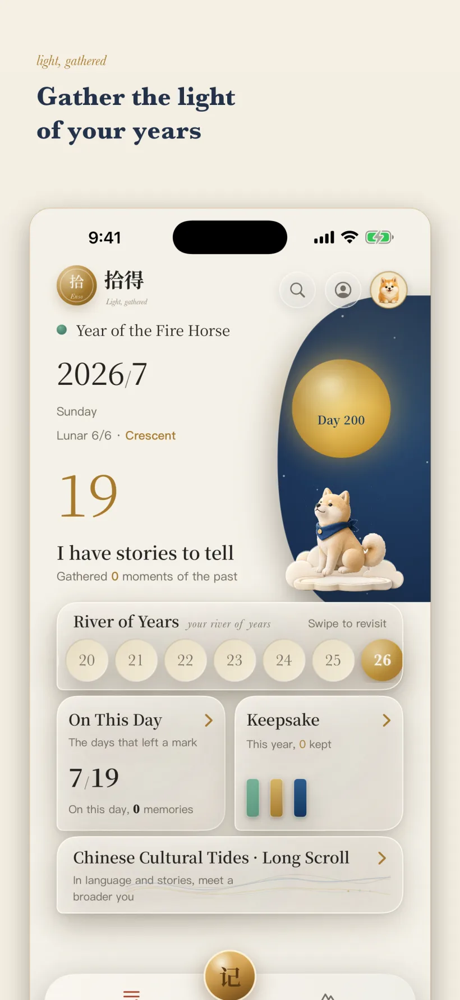

ENSŌ SHIDE
简体中文 · 繁體中文 · English · 日本語ENSŌ SHIDE
简体中文 · 繁體中文 · English · 日本語ENSŌ SHIDE
简体中文 · 繁體中文 · English · 日本語
ENSŌ SHIDE
简体中文 · 繁體中文 · English · 日本語ENSŌ SHIDE
简体中文 · 繁體中文 · English · 日本語ENSŌ SHIDE
简体中文 · 繁體中文 · English · 日本語Features and implementation status
Enso Shide (拾得) is a local-first iOS app for overseas Chinese families: record your life's memories against the cultural coordinates generations have shared since 1980, and turn them into a bilingual Chinese–English keepsake book to pass on to the next generation — no account, no uploads.
This page only lists capabilities that can be located in the current repository. Product goals and undeployed services are not presented as shipped features.

Memory, Profile, Keepsake and CompanionState use SwiftData. MemoryWriter provides the shared write path for private memories, while migration code bridges older records.
Public cultural items are fetched as read-only context. A private stamp stores a local snapshot and reference rather than writing a user's note back into the public catalog.
The v1 companion uses a local ConversationGraph path. Premium book generation uses the deterministic on-device renderer; online AI is an optional Ensō+ subscription capability, invoked only when you choose to; the deterministic on-device path works without it.
Ensō publishes seasonal cultural features tied to the calendar (such as Mid-Autumn), gathering that season's public cultural landmarks into a single entry point. Features and individual cultural events support Universal Link deep links, so tapping one opens directly to the matching page inside the app.
The on-device and AI dual-track book supports several author-voice styles and layouts. Books cover side-by-side Chinese–English, and also offer Chinese-only, English-only, and Japanese-only editions, so elders and the next generation can each read the version that suits them.